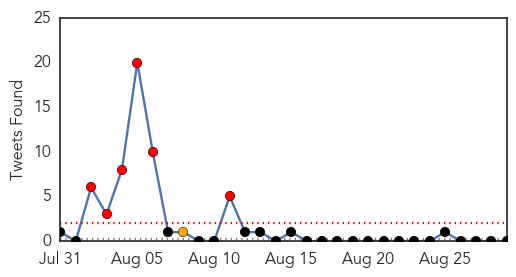
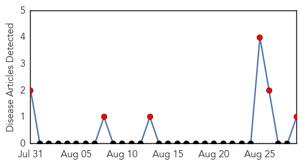

Unknown
30-Day Web Trend
1 alerts, 0 warnings
30-Day Twitter Trend
6 alerts, 0 warnings

Article Locations

Article Confidences
Top Articles:
- 0.963
- Malaria kills 11 tribal children in Jharkhand
- 0.956
- Outbreak of summer colds looks more like winter flu
- 0.917
- Chicago Tribune
- 0.917
- Chicago Tribune
- 0.917
- Chicago Tribune
- 0.917
- Chicago Tribune
- 0.917
- Chicago Tribune
- 0.910
- The world windows to Thailand
- 0.910
- The world windows to Thailand
- 0.883
- KRNV, Reno, NV
- 0.883
- NBG offers cash to those who report guinea worm cases
- 0.866
- Russian minister to take off from after forced stop in Bratislava
- 0.866
- Eastern Ukraine rebel leader agrees to let encircled Ukraine troops leave
- 0.866
- Public school teachers clash with police during a march held as part of a national strike by the teachers in Asuncion
- 0.866
- Masked students take part in a demonstration against the government demanding changes in the state education system in Valparaiso city
- 0.842
- Deadly, brain-eating bug discovered in town water supply used by 12,000 people
- 0.811
- Zimbabwe's Infant, Maternal Mortality Rates Drop
- 0.811
- Zimbabwe's Infant, Maternal Mortality Rates Drop
- 0.808
- Green Cabbage Likely Caused Minnesota's Recent E. Coli O111 Outbreak
- 0.800
- Zimbabwe's Infant, Maternal Mortality Rates Drop
- 0.793
- Texas Cyclospora outbreak over; Mexican cilantro suspected
- 0.790
- FDA statement on Texas cyclospora outbreak
- 0.775
- At Least 18 E. coli O111 Cases in 4 States Likely Linked to Cabbage
- 0.721
- 61 malaria cases reported in August
- 0.707
- Deadly, brain-eating amoeba found in Louisiana water system
- 0.697
- Untitled Article
- 0.693
- Obama has 'no strategy yet' against IS militants in Syria
- 0.693
- West Side school hit hard by stomach flu
- 0.692
- Police hunt for British boy with brain tumour taken to France
- 0.680
- Stomach bug outbreak at Pine Middle School
- 0.674
- Rapid review for Pfizer’s superbug vaccine
- 0.668
- Vaccine for Chagas disease expected to be available within the next three years
- 0.636
- Great health policies, poor outcomes
- 0.596
- China's new health department: progress and priorities
- 0.592
- Smoked Prosciutto Speck recalled due to Listeria risk
- 0.591
- Ukraine: health workers fear for their safety
- 0.590
- Viral outbreak of Enterovirus 68 sends hundreds of Kansas City metro kids to hospital
- 0.577
- New Home Program offered for those with mental illness
- 0.564
- "Third wave" of malaria resistance lurks on Thai-Cambodia border
- 0.552
- Deadly Amoeba Found in Louisiana Water Supply Sparks Panic
- 0.547
- [Weekender] Societal aging poses challenge to health sector
- 0.546
- Brain-eating amoeba in Louisiana: Water infestations can harm through nostrils
- 0.546
- Notice of Determination of the Foot-and-Mouth Disease and Rinderpest Status of a Region of Patagonia, Argentina
- 0.545
- Fightng back against cars: A tale of two cities
- 0.537
- E. coli at Applebee's: Minnesota health officials blame cabbage
- 0.524
- It was reported that the Number on PositiveSingles.dating increased about 20% in 2014
- 0.513
- Hospitals on high alert once again
Top Tweets:
- 0.678
- hoy no quiero salir al reguero de los jueves, hoy quiero esperarte en casa con una botella de vino ☺️
- 0.632
- Suspenden las grabaciones de cine porno en Estados Unidos por un posible caso de VIH: Es la tercera ocasión ... http://t.co/PNRGqmbQQh
- 0.526
- RT: Los dejan en "Read" y piensan lo peor, a lo mejor esta bien ocupado/a, tal vez se esta muriendo o masturbando, deja la insegur…
Mumps
30-Day Web Trend
30 alerts, 0 warnings

30-Day Twitter Trend
1 alerts, 0 warnings
Article Locations

Article Confidences

Top Articles:
Top Tweets:
-
No tweets found for Aug 29, 2014